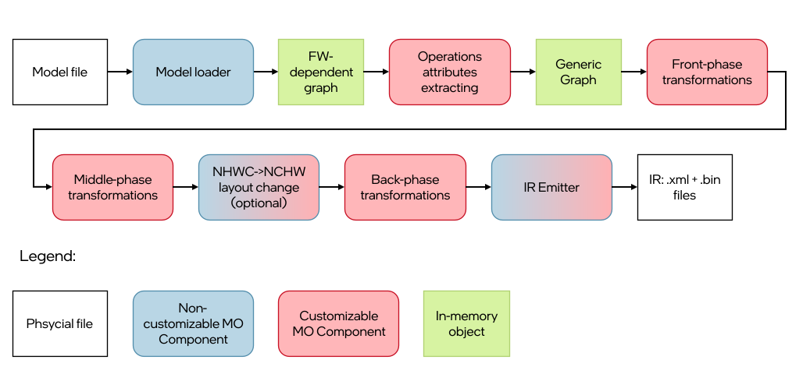
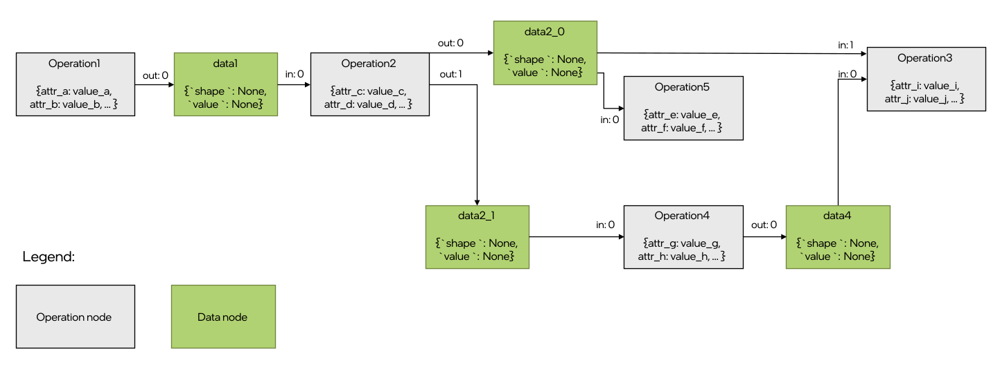

Legacy Model Optimizer Extensibility#
Danger
The code described here has been deprecated! Do not use it to avoid working with a legacy solution. It will be kept for some time to ensure backwards compatibility, but you should not use it in contemporary applications.
This guide describes a deprecated TensorFlow conversion method. The guide on the new and recommended method, using a new frontend, can be found in the Frontend Extensions article.
This article describes Model Optimizer internals. Altering them may result in application instability, and in case of future changes to the API, lack of backward compatibility.
Note
If you want to add support for ONNX, TensorFlow Lite, PaddlePaddle or TensorFlow operations, or you are not familiar with other extension alternatives in OpenVINO, read this guide instead.
Model Optimizer extensibility mechanism enables support of new operations and custom transformations to generate the optimized intermediate representation (IR) as described here. This mechanism is a core part of Model Optimizer, as a huge set of examples showing how to add custom logic to support your model.
There are several cases when the customization is needed:
A model contains operation(s) not known for the Model Optimizer, but these operation(s) could be expressed as a combination of supported operations. In this case, a custom transformation should be implemented to replace unsupported operation(s) with supported ones.
A model contains a sub-graph of operations that can be replaced with a smaller number of operations to get better performance. This example corresponds to so-called fusing transformations (e.g., replacing a sub-graph performing the calculation \(x/(1.0+e^{-(beta*x)})\) with a single operation of type Swish.
A model contains a custom framework operation (the operation that is not a part of an official operation set of the framework) that was developed using the framework extensibility mechanism. In this case, Model Optimizer should know how to handle the operation and generate a corresponding section in an IR for it.
It is necessary to figure out how Model Optimizer represents a model in a memory and converts it to an IR before going into details of the Model Optimizer extensibility mechanism.
Note
All paths in this article are provided relatively to the Model Optimizer installation directory if not stated otherwise.
Model Representation in Memory#
The model can be represented as a directed graph, where nodes are operations and edges correspond to data passing from a producer operation (node) to a consumer operation (node).
Model Optimizer uses Python class mo.graph.graph.Graph instance to represent the computation graph in memory during
the model conversion. This class is inherited from the networkx.MultiDiGraph class of the standard networkx Python
library. It provides many convenient methods to traverse and modify the graph. Refer to the mo/graph/graph.py file for examples.
Model Optimizer keeps all necessary information about the operation in node attributes. Model Optimizer uses the mo.graph.graph.Node class defined in the mo/graph/graph.py file, which is a wrapper on top of a networkx node attributes
dictionary, and provides many convenient methods to work with the node. For example, the node my_node attribute with a
name my_attr can be retrieved from the node with the following code my_node.my_attr, which is equivalent to obtaining
attribute with name my_attr in the graph.node[my_node] dictionary. For the class implementation details, refer to the mo/graph/graph.py file.
An operation may have several inputs and outputs. For example, operation Split has
two inputs: data to split and axis to split along, and variable number of outputs depending on a value of attribute
num_splits. Each input data to the operation is passed to a specific operation input port. An operation produces
the output data from an output port. Input and output ports are numbered from 0 independently. Model Optimizer uses
classes mo.graph.port.Port and mo.graph.connection.Connection, which are useful abstraction to perform graph
modifications like nodes connecting/re-connecting and graph traversing. These classes are widely used in the Model
Optimizer code so it is easy to find a lot of usage examples.
There is no dedicated class corresponding to an edge, so low-level graph manipulation is needed to get access to
edge attributes if needed. Meanwhile, most manipulations with nodes connections should be done with help of the
mo.graph.connection.Connection and mo.graph.port.Port classes. Thus, low-level graph manipulation is error prone and
is strongly not recommended.
Further details and examples related to a model representation in memory are provided in the sections below, in a context for a better explanation. For more information on how to use ports and connections, refer to the Graph Traversal and Modification Using Ports and Connections article.
Model Conversion Pipeline#
A model conversion pipeline can be represented with the following diagram:
Each conversion step is reviewed in details below.
Model Loading#
Model Optimizer gets a trained model file as an input. The model loader component of Model Optimizer reads a model file
using Python bindings provided with the framework and builds an in-memory representation of a computation graph. There
is a separate loader for each supported framework. These loaders are implemented in the
extensions/load/<FRAMEWORK>/loader.py files of Model Optimizer.
Note
Model Optimizer uses a special parser for Caffe models built on top of the caffe.proto file. In the case of a model loading failure, Model Optimizer throws an error and requests preparation of the parser that can read the model. For more information on how to prepare the custom Caffe parser, refer to the question #1 in the Model Optimizer FAQ.
The result of a model loading step is a Graph object, which can be depicted like in the following example:
Model Optimizer loader saves an operation instance framework description (usually it is a Protobuf message) into a node
attribute usually with a name pb for each operation of an input model. It is important that this is a
framework-specific description of an operation. This means that an operation (e.g.
Convolution may be represented differently in, for example, Caffe and
TensorFlow frameworks but performs the same calculations from a mathematical point of view.
In the image above, the Operation 2 has one input and two outputs. The tensor produced from the output port 0 is consumed with the Operation 5 (the input port 0) and Operation 3 (the input port 1). The tensor produced from the output port 1 is consumed with the Operation 4 (the input port 0).
Each edge has two attributes: in and out. They contain the input port number of the consumer node and the output port
number of the producer node. These attributes describe the fact that nodes are operations consuming some input tensors
and producing some output tensors. From the perspective of Model Optimizer, nodes themselves are black boxes because
they do not contain required information about the operation they perform.
Operations Attributes Extracting#
The next step is to parse framework-dependent operation representation saved in a node attribute and update the node attributes with the operation specific attributes. There are three options to do this.
The extractor extension approach (recommended way to extract attributes for an operation). Explained in details in the Operation Extractor article.
The legacy approach with a built-in extractor. The
mo/front/<FRAMEWORK>/extractor.pyfile (for example, the one for Caffe) defines a dictionary with extractors for specific operation types. A key in the dictionary is a type of an operation to trigger the extracting function for and the value is the function. The function has one parameter – a node to extract attributes from. This is a legacy and non-extensible approach so it should be avoided. This mechanism will be removed in future versions of Model Optimizer.
The extractors execution order is the following:
CustomLayersMapping.xml(for Caffe models only).Model Optimizer extension.
Built-in Model Optimizer extractor.
The result of operations attributes extracting step can be depicted like in the following example:
The only difference in the graph from the previous step is that nodes contain dictionary with extracted attributes and
operation-specific attributes needed for Model Optimizer. However, from this step, Model Optimizer does not
need the original representation of the operation/model and just uses Model Optimizer representation (there are some
peculiar cases in which Model Optimizer still uses the pb attribute, covered in this
article partially). A detailed list of common node attributes and their values is provided in the
Model Optimizer Operation article.
Front Phase#
For legacy reasons, you must specify shapes for all not fully-defined inputs of the model. In contrast, other
machine learning frameworks, like TensorFlow, let you create a model with undefined or partially defined input shapes.
As an example, undefined dimension is marked with an integer value -1 in a TensorFlow model or has some string name
in an ONNX model.
During the front phase, Model Optimizer knows shape of the model inputs and constants only and does not know shapes
(and even ranks) of the intermediate tensors. But information about shapes may not be needed to implement particular
transformation. For example, the transformation extensions/front/TopKNormalize.py removes an attribute k from a
TopK node and adds an input constant with the value k. The transformation is needed to convert a TopK operation.
It comes from frameworks, where a number of output elements is defined as an attribute of the operation to the
OpenVINO TopK operation semantic, which requires this value to be a separate input.
It is important to mention that sometimes it seems like transformation cannot be implemented during the front phase
because the actual values of inputs or shapes are needed. In fact, manipulations of shapes or values can be implemented
using operations that are added to the graph. Consider the
extensions/front/onnx/flattenONNX_to_reshape.py transformation, which replaces an ONNX
Flatten operation with a sub-graph of operations performing
the following (when axis is not equal to 0 and 1):
Calculate a shape of the
Flatteninput tensor, using the ShapeOf operation.Get the first
axiselements from the output ofShapeoperation and calculate their product, using the ReduceProd operation.Concatenate output of the
ReduceProdand constant with the value of-1(for an explanation of this value refer to the Reshape specification page).Use the concatenated value as the second input to the
Reshapeoperation.
It is highly recommended to write shape-agnostic transformations to avoid model reshape-ability issues. For more information related to the reshaping of a model, refer to the Using Shape Inference guide.
More information on how to develop front phase transformations and dedicated API description is provided in the Front Phase Transformations.
Partial Inference#
Model Optimizer performs a partial inference of a model during model conversion. This procedure includes output shapes calculation of all operations in a model and constant folding (value calculation for constant sub-graphs). The constant folding is needed for the shape inference because in some cases evaluation of constant sub-graph is needed to calculate output shapes. For example, the output shape for the Reshape operation may be defined as a mathematical expression using the ShapeOf operation output.
Note
Model Optimizer does not fold sub-graphs starting from the ShapeOf operation by default because this leads to a model non-reshape-ability (the command-line parameter --static_shape can override this behavior). For more information related to reshaping of a model, refer to the Using Shape Inference guide.
Model Optimizer calculates output shapes for all operations in a model to write them to Intermediate Representation files.
Note
This is a legacy requirement. Starting with IR version 10, OpenVINO Runtime needs to know shapes of the Const and the Parameter operations only. The OpenVINO Runtime calculates output shapes for all operations in a model, using shapes of Parameter and Const operations defined with respective operation attributes.
Model Optimizer inserts data nodes to the computation graph before starting the partial inference phase. The data node
corresponds to the specific tensor produced with the operation. Each data node contains two attributes: shape,
containing the shape of the tensor, and value, which may contain the actual value of the tensor. The value for a value
attribute is equal to None if this tensor value cannot be calculated. This happens in two cases: when a tensor value
depends on a values passed to the Parameter operation of a model or
Model Optimizer does not have value propagation implementation for the operation.
Before running partial inference, the graph can be depicted like in the following example:
The difference in a graph structure with a graph during the front phase is not only in the data nodes, but also in the
edge attributes. Note that an out attribute is specified for edges from operation nodes only, while an in
attribute is specified for edges from data nodes only. This corresponds to the fact that a tensor (data node) is
produced from a specific output port of an operation and is consumed with a specific input port of an operation. Also,
a unique data node is created for each output port of an operation. The node may be used as an input node for several
operation nodes. Similarly to the data node data2_0, which is consumed with the input port 1 of the Operation 3 and
input port 0 of the Operation 5.
Now, consider how Model Optimizer performs shape and value propagation. Model Optimizer performs graph nodes
topological sort. An error message is thrown if a graph contains a cycle. Then, shape inference functions are called for
each node in the graph, according to the topological order. Each node of the graph must have an attribute called infer
with a shape inference function, which is a function with one parameter – an instance of the Node class. The infer
attribute is usually set in the operation extractor or when a node is added in some transformation using the Model
Optimizer operation class inherited from the mo.pos.Op class. For more information on how to specify a shape inference function,
refer to the Model Optimizer Operation and Operation Extractor articles.
A shape inference function should calculate an operation (node) output shape(s) based on input shape(s) and operation
(node) attribute(s) and update shape and optionally value attributes of the corresponding data node(s). A simplified
example of the shape infer function for the Reshape operation (the full version is
available in the mo/ops/reshape.py file):
@staticmethod
def infer(node: Node):
name = node.soft_get('name', node.id)
input_shape = node.in_port(0).data.get_shape() # get the input tensor shape
new_shape = node.in_port(1).data.get_value() # get the value defining the output tensor shape. This tensor may
# have special values like 0 and -1
output_shape = ... # calculate output shape without special values like 0 and -1
if node.in_port(0).data.get_value() is not None: # if the input value is defined then calculate output value;
# shape will be updated automatically with the value shape
node.out_port(0).data.set_value(node.in_port(0).data.get_value().reshape(output_shape))
else: # in the opposite case calculate the output shape only
node.out_port(0).data.set_shape(output_shape)
Methods in_port() and output_port() of the Node class are used to get and set data node attributes. For more information on
how to use them, refer to the Graph Traversal and Modification Using Ports and Connections article.
Note
A shape inference function should perform output shape calculation in the original model layout. For example, OpenVINO™ supports Convolution operations in NCHW layout only but TensorFlow supports NHWC layout as well. Model Optimizer shape inference function calculates output shapes for NHWC Convolutions in NHWC layout and only during the layout change phase the shape is converted to NCHW.
Note
There is a legacy approach to read data node attribute, like input_shape = op_node.in_node(0).shape and modify data nodes attributes, like op_node.out_node(0).shape = some_value. This approach is still used in the Model Optimizer code but is not recommended. Instead, use the approach described in the Ports.
Middle Phase#
The middle phase starts after partial inference. At this phase, a graph contains data nodes and output shapes of all
operations in the graph have been calculated. Any transformation implemented at this stage must update the shape
attribute for all newly added operations. It is highly recommended to use API described in the
Graph Traversal and Modification Using Ports and Connections because modification of a graph using this API causes automatic re-inference of affected nodes as well as necessary data nodes creation.
More information on how to develop middle transformations and dedicated API description is provided in the Middle Phase Transformations.
NHWC to NCHW Layout Change#
There are several middle transformations responsible for changing model layout from NHWC to NCHW. These transformations are triggered by default for TensorFlow models as TensorFlow supports Convolution operations in the NHWC layout.
This layout change is disabled automatically if the model does not have operations that OpenVINO™ needs to execute in the NCHW layout, for example, Convolutions in NHWC layout.
For more details on how it works, refer to the source code of the transformations mentioned in the below summary of the process:
Model Optimizer changes output shapes of most of operations producing 4D and 5D (four dimensional and five dimensional) tensors as if they were in NHWC layout to NCHW layout:
nchw_shape = np.array(nhwc_shape)[0, 3, 1, 2]for 4D andnchw_shape = np.array(nhwc_shape)[0, 4, 1, 2, 3]for 5D. This permutation does not happen for some operations with specific conditions identified during a model conversion.Model Optimizer inserts Gather operations to the sub-graph relates to shapes calculation in order to perform shape calculation in a correct layout.
Model Optimizer inserts Transpose operations for some operations with specific conditions, identified during a model conversion, to produce correct inference results.
The main transformations responsible for a layout change are:
extensions/middle/ApplyPermutations.pyextensions/middle/InsertLayoutPropagationTransposes.pyextensions/middle/MarkSubgraphsWithCorrectLayout.pyextensions/middle/ApplyNHWCtoNCHWpermutation.pyextensions/middle/LayoutChangeForConstantShapePaths.py
Back Phase#
The back phase starts after the layout change to NCHW. This phase contains mostly the following transformations:
Transformations that should work with a graph in the NCHW layout and thus cannot be implemented in the middle phase.
Transformations that replace nodes corresponding to internal Model Optimizer operations with nodes corresponding to the opset operations.
Transformations that normalize operations inputs according to the specification.
Final optimization transformations.
A graph structure during the back phase is the same as during the middle phase. There is no difference in writing middle and back transformations.
More information on how to develop back transformations and dedicated API description is provided in the Back Phase Transformations.
Intermediate Representation Emitting#
The last phase of a model conversion is the Intermediate Representation emitting. Model Optimizer performs the following steps:
Iterates over all operation nodes in the graph and checks that all nodes have the
typeattribute set. This attribute defines the operation type and is used in the OpenVINO to instantiate proper operation from the opset specified in theversionattribute of the node. If a node does not have attributetypeor its value is equal toNone, Model Optimizer exits with an error.Performs type inference of graph operations similar to the shape inference. Inferred data types are saved to a port attributes in the IR.
Performs topological sort of the graph and changes
idattribute of all operation nodes to be sequential integer values starting from 0.Saves all Constants values to the
.binfile. Constants with the same value are shared among different operations.Generates an
.xmlfile defining a graph structure. The information about operation inputs and outputs are prepared uniformly for all operations regardless of their type. A list of attributes to be saved to the.xmlfile is defined with thebackend_attrs()orsupported_attrs()of theOpclass used for a graph node instantiation. For more information on how the operation attributes are saved to XML, refer to the functionprepare_emit_ir()in themo/pipeline/common.pyfile and Model Optimizer Operation article.